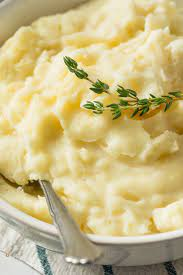

Mashed Potatoes

Description
Mashed potatoes or mashed taters, colloquially known as mash (British English), is a dish made by mashing boiled potatoes, usually with added milk, butter, salt and pepper. It is generally served as a side dish to meat or vegetables.
Ingredients
- 1,5 kg mixed potatoes
- 65 g butter
- 120 ml milk
- 65 g sour cream
- black pepper
Steps
- In a large pot, cover potatoes with water and add a generous pinch of salt. Bring to a boil and cook until totally soft, 16 to 18 minutes. Drain and return potatoes to pot.
- Use a potato masher to mash potatoes until smooth.
- Meanwhile, in a small saucepan, melt butter and milk until warm.
- Pour over warm milk-butter mixture and stir until completely combined and creamy. Add sour cream and stir until combined.
- Season mashed potatoes generously with salt and pepper.
- Transfer potatoes to a serving bowl and top with remaining two tablespoons butter. Season with more pepper before serving.